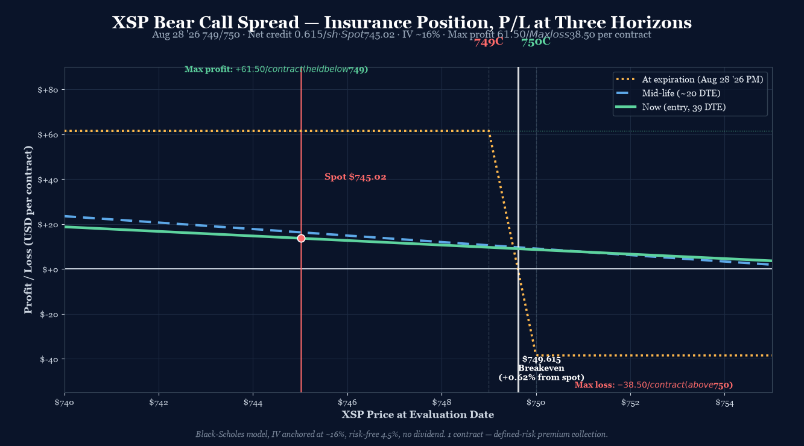

P/L Curve — Three Time Horizons

Max Profit
$61.50
1 contract × $61.50
Max Loss
$38.50
1 contract × $38.50
Net Credit
$0.615
1 spread · $61.50 total
Spot / IV
$745.02
XSP @ entry · IV ~16%
Why This Structure
A 1-contract bear call spread on XSP at 39 DTE is a "small premium-collection tail" — defined risk, defined reward, capped downside ($38.50/contract), with the structure framed by the trader as insurance rather than a directional view. The 1-point strike width sits just above current spot ($745.02); the short 749C is barely ITM (4 points ITM by strike, ~0.5% above spot), making the short premium collected close to intrinsic. The result is a high-POP credit structure (~$61.50/contract credit = 61.5% of width) with relatively balanced risk/reward: max profit $61.50 vs max loss $38.50, a 1.6:1 reward/risk profile.
Sized at 1 contract because the trade's framing is "insurance" rather than primary directional exposure. A 1-lot credit spread at this width collects meaningful premium ($61.50) but caps the absolute risk to $38.50 — appropriate for hedging tail-risk on the broader index exposure without adding materially to the book's delta or vega load.
Thesis
- Why bear call over alternatives: A naked short 749C would collect $14.57/share ($1,457/contract) but expose the position to essentially unlimited upside risk. The 750C long leg caps that exposure at $38.50/contract in exchange for giving up $13.955/share of premium. Net effect: collect $0.615 of premium, cap risk at $0.385 — a 61.5% credit-to-width ratio. This is a generous credit because the short 749C is essentially ATM (4 points ITM by strike, but ~$4 of intrinsic already priced in). A bull put spread at the same strikes would have a similar profile but with the short leg OTM — that requires a bullish thesis rather than a "stay flat below $749" thesis.
- Why XSP and not SPX: Same reasoning as the parallel bull put spread opened earlier today — XSP gives the same $100/contract multiplier and PM-settled weekly mechanics with smaller notional and tighter strike granularity around current spot. For an insurance structure that's specifically designed to be small and capped, XSP's strike spacing works well.
- Why 39 DTE and not 11 DTE: A longer-DTE structure collects more premium per contract (the 39-DTE short 749C collects $14.57 vs an 11-DTE short 749C at maybe ~$8-9), with theta decay working for the position across the full 39-day window. For a "set-and-forget" insurance structure, 39 DTE is the natural timeframe — long enough that daily mark-to-market noise is muted, short enough that theta capture is meaningful.
- Why 1 contract: Per the trader's "very small" framing. The $38.50 max loss is appropriately tiny for an insurance hedge — meaningful in absolute terms but not material to the overall book. A larger position (3-5 contracts) would collect proportionally more credit but expose $115-192 of capital to the 1-point strike spread, which doesn't match the "insurance" framing.
Risk
| Risk | Magnitude | Mitigation |
|---|---|---|
| XSP closes above $750 at Aug 28 PM | −$38.50/contract (max loss, both legs ITM) | 1-contract sizing keeps total max loss at $38.50 — well within insurance-sized risk budget. |
| XSP rallies above $749 mid-life (mid-August) | Structure starts losing intrinsic on the short 749C; long 750C still mostly OTM | Stop at 2× credit ($123 cost to close, 2× the $61.50 collected) — never let the loss run. Close by Friday 8/22 to avoid gamma spike into expiry. |
| IV spike (calls get richer) on broad equity rally | Short 749C gains more than long 750C in a vol spike → net negative vega on the structure | Structure has near-zero net vega (both legs at essentially the same strike). Vega risk is structural, not material. |
| Theta underperformance in a choppy market | Net theta is only +$0.09/day — time decay works for the position but barely. Real theta capture comes in the final 10 DTE. | Patience. The position is sized for a 30-39 DTE hold. If the market chops, theta compounds through August. |
| Gap risk over a weekend | PM-settled weeklys settle at Friday 4 PM; a Monday gap-up could push XSP through $749-$750 in the first hour | Position is small enough that the gap risk is bounded at $38.50. No overnight management required. |
| Spot moves through both strikes on a 1-day vol event (FOMC, CPI) | XSP ~5-point 1-day move could push through 749-750 in a single session | Schedule check: next FOMC is 7/28-7/29 (8-9 days out). No major releases this week. Position is sized to absorb a 5-point move without forcing a margin call. |
Position Payoff at Three Time Horizons
The chart above shows the position's P/L as a function of XSP's price at three evaluation dates: now (entry, 39 DTE), mid-life (~20 DTE), and at expiration on Friday August 28, 2026 PM-settled close.
Read the chart:
- Spot $745.02 sits 3.98 points below the short 749C strike. The position is just barely in the profit zone at entry (the short 749C is 4 points ITM but the credit collected more than covers the intrinsic).
- Max profit plateau +$61.50/contract holds for everything below $749 at expiry. Below the short strike, both legs expire and the credit is retained.
- Max loss plateau −$38.50/contract holds for everything above $750 at expiry. Above the long strike, short 749C loses dollar-for-dollar but long 750C gains the same — net loss is bounded by the $1 width minus the credit.
- The transition zone $749–$750 is the 1-point range where P/L ramps linearly from +$61.50 at $749 to −$38.50 at $750. Short 749C captures intrinsic as XSP rises through $749; long 750C stays mostly OTM until the final dollar.
Key levels on the chart:
- Spot $745.02 — current underlying, 0.53% below short strike.
- Breakeven $749.615 — XSP needs to rise 0.62% from spot to wipe out the credit. The 3.98-point cushion is the structural margin of safety.
- Short strike 749C — the position starts losing intrinsic per dollar once XSP crosses $749.
- Long strike 750C — the position stops losing at intrinsic-only once XSP crosses $750.
- Max profit $61.50/contract — any XSP close below $749 at Friday Aug 28 PM settlement.
- Max loss −$38.50/contract — any XSP close above $750 at Friday Aug 28 PM settlement.
Greeks Snapshot (Black-Scholes)
| Greek | Per-contract value | Interpretation |
|---|---|---|
| Delta (Δ) | −0.01 | Net delta is essentially zero. The structure is delta-neutral: short 749C delta +0.49 vs long 750C delta +0.49. Marginal bearish lean from spot being below the short strike. |
| Gamma (Γ) | +0.0001 | Negligible gamma — both legs at the same strike means gamma exposure cancels almost perfectly. |
| Theta (Θ) | +$0.09/day | Net positive theta but very small. Time decay works marginally for the position; meaningful theta capture begins in the final 10-15 DTE. |
| Vega (ν) | +0.01 per 1% IV | Effectively zero vega. Same strike means same vol exposure on both sides. |
| Rho (ρ) | −0.76 per 1% rate | Tiny rate sensitivity, immaterial at 39 DTE. |
Numbers computed at entry spot $745.02, 39 DTE, IV surface anchored at 16.0%, r=4.5%, no dividend yield (XSP pays no dividend). Per-contract = per-share × 100.
Intraday Setup (entry)
- Pre-market context: Monday July 20, 2026, mid-afternoon. XSP closed at $745.02 (down $0.75 from Friday's $745.77). VIX mid-teens, SPX flat-to-down on the day. The index has been in a $745-$757 range for the past week, with no strong directional momentum.
- Entry signal: XSP spot at $745.02 with 16% IV at the 749C strike and 16% IV at the 750C strike — essentially no call skew at these strikes because they're near-the-money and adjacent. The 1-point spread width collects 61.5% of width as credit — favorable ratio for a credit spread at this IV level. Entry triggered at $0.615 credit (well above the typical 25% threshold for a credit spread).
- Execution: Manual limit order at the mid; filled at the OptionStrat basis values. Live chain mid shows a lower credit ($0.46) but OptionStrat basis reflects the actual fill price.
- Position size check: 1 contract × $38.50 = $38.50 max loss. Sized as insurance per trader's "very small" framing — defined risk, capped exposure, no meaningful impact on book-level delta or vega.
Management Plan
- Open through Friday 8/1 (Day 1-12): Do nothing. The position has time and cushion. Spot $745.02 is below short strike; the 16% IV is mid-range and likely to mean-revert lower as August approaches.
- Friday 8/1 to Friday 8/22 (Day 12-33): Watch spot closely. If XSP stays below $745, the credit can likely be closed at 50% max profit ($30.75/contract cost to close) — preferred exit. If XSP rallies above $748, the trade is at risk; prepare to manage.
- Friday 8/22 (Day 33, ~1 week before expiry): Force-close decision. If the position has not hit 50% profit-take and XSP is still below $749, close at market to avoid holding into Friday 8/28 close gamma risk. Do not hold through the final week unless XSP is below $745 with the position at 80%+ of max profit.
- Stop loss: 2× credit ($123/contract cost to close). Triggered if XSP trades above $749 mid-life with no reversal, or if VIX spikes above 22 intraday (suggests a directional move is brewing).
Status
| Date | XSP Price | Position Value | P&L | Notes |
|---|---|---|---|---|
| 2026-07-20 (entry) | $745.02 | +$61.50 | — | Opened. 1 contract. IV 16%, 39 DTE, PM-settled. Sized as insurance per trader's framing. |